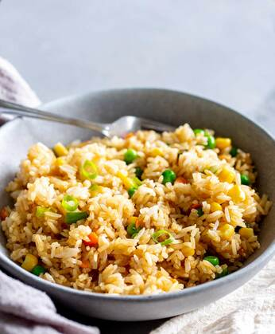

Fried rice

Ingredients
1 cup white long-grain rice
2 tsp vegetable oil
2 eggs, lightly whisked
2 bacon rashers, chopped
carrot, peeled and grated
2 shallots, trimmed, finely sliced
1/2 cup frozen peas, thawed
1 tbsp soy sauce
Sesame seeds, to serve
Shallots, sliced, extra, to serve
Method
- 1. Cook the rice (1 cup white long-grain rice) in a large saucepan of boiling water for 12 minutes or until tender. Drain and leave to cool.
- 2. Heat oil in non-stick wok or large frying pan over medium heat. Add eggs. Swirl over base to form an omelette.
Cook for 2 minutes or until set. Transfer to a chopping board. Set aside to cool slightly. Cut into short strips.
- 3. Add bacon to wok. Cook 4 minutes until light golden. Add carrot. Stir fry 1 minute. Add shallots, peas and rice. Cook,
stirring, 3-4 minutes. Add egg and soy sauce. Stir until heated through. Sprinkle with sesame seeds and top with extra shallots. Serve immediately.